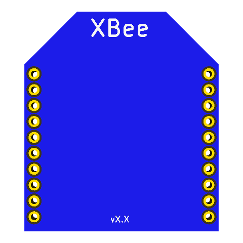

This project template is the basis of a
XBee form-factor daughter board.
XBee is the brand name from Digi International for a family of form factor compatible radio modules. The first XBee radios were introduced under the MaxStream brand in 2005 and were based on the 802.15.4-2003 standard designed for point-to-point and star communications at over-the-air baud rates of 250 kbit/s.
Two models were initially introduced—a lower cost 1 mW XBee and the higher power 100 mW XBee. Since the initial introduction, a number of new XBee radios have been introduced and all XBees are now marketed and sold under the Digi brand.
The XBee radios can all be used with the minimum number of connections - power (3.3 V), ground, data in and data out (UART), with other recommended lines being Reset and Sleep. Additionally, most XBee families have some other flow control, I/O, A/D and indicator lines built in. A version of the XBees called the programmable XBee has an additional onboard processor for user’s code. The programmable XBee and a new surface mount (SMT) version of the XBee radios were both introduced in 2010.
To learn more, visit the Digi International website
here.
Here is a snapshot of what the XBee form-factor PCB looks like:

(c)2015 Casco Logix